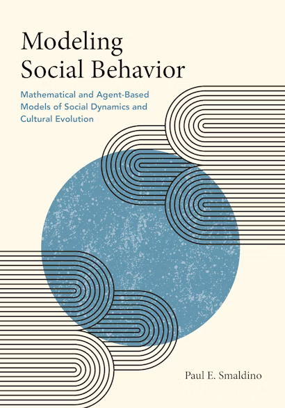
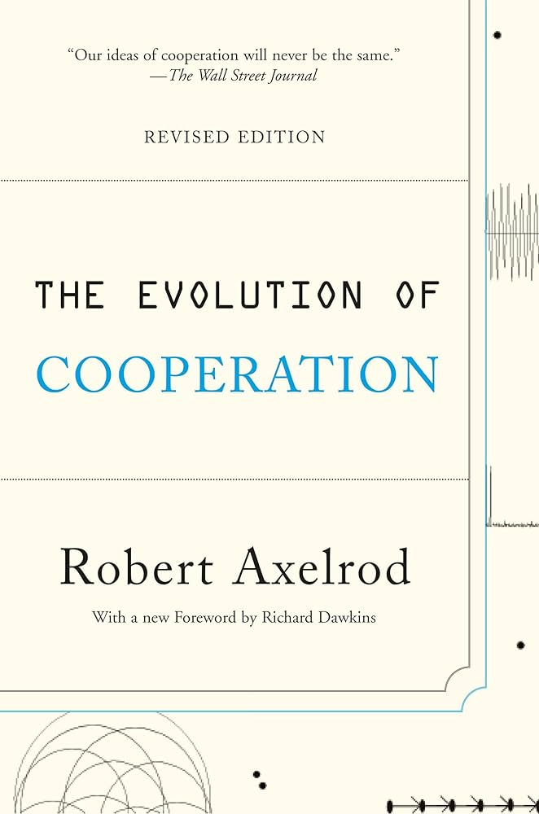
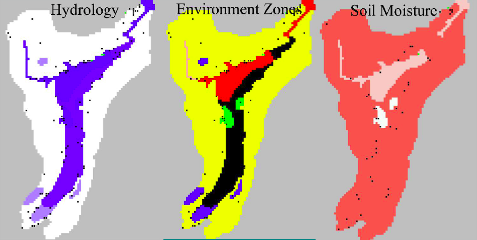
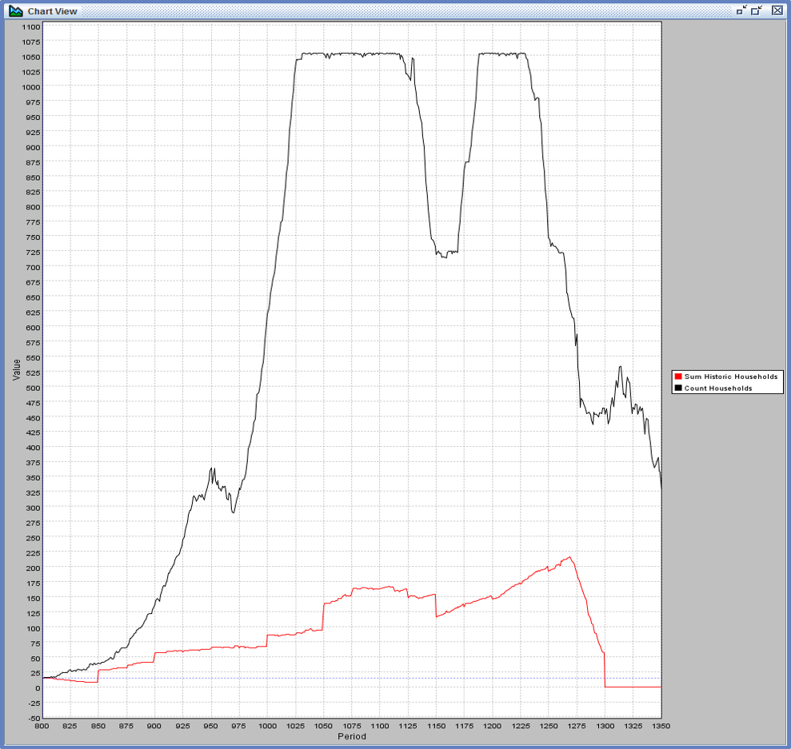
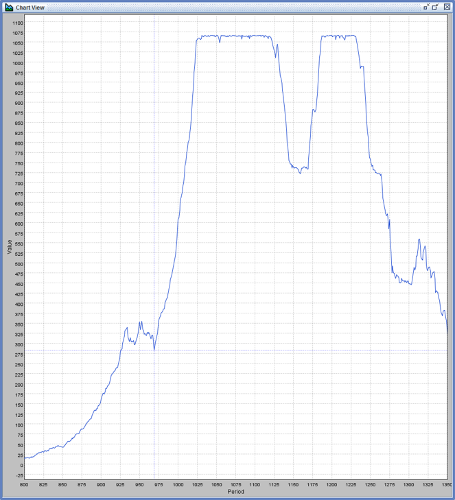
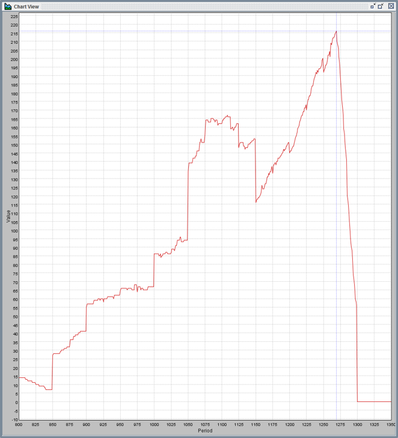

Introduction to Agent-Based Modeling
EES 4760/5760
Agent-Based and Individual-Based Computational Modeling
Jonathan Gilligan
Class #1: Wednesday, August 20 2025
Who Are You?
Who Are You?
- Who are you? (Name, year, major)
- What is something that made you interested to study computational modeling?
- Ask me a question about computational modeling
- Something interesting about yourself
Overview of the Semester
Textbooks

|
Steven F. Railsback & Volker Grimm, Agent-Based and Individal-Based Modeling (2nd Edition) |
|  | Paul E. Smaldino, Modeling Social Behavior |
Getting Started
For Monday:
- Download and install NetLogo on your computer.
- URL in syllabus and assignment sheet
Course Web Site
-
ees4760.jgilligan.org
- Syllabus
- All reading and homework assignments for the semester
- Slides from class.
- Files you will need for homework assignments.
- Links to helpful resources.
- Slides:
- The title slide has QR code with link to online version.
- PDF versions are also posted to course web site (link on title slide)
- Slides have two-dimensional navigation (in a browser, hit “?” for help)
Agent-Based Modeling
Agent-Based Modeling
- Simulate individuals:
- Autonomous
- Heterogeneous
- Quasi-local
- Bounded rationality
- Simulate environment
- Emphasize simplicity, minimal assumptions
-
Emergence: Large-scale phenomena arise from
small-scale individual interactions
- Interesting when large-scale is not easily predicted from small-scale
Simple Experiments
- Play with economics
Simple agents trade with each other
-
Confirm 1st welfare theorem:
Trading leads to Pareto equilibrium
-
Find conditions for satisfying theorem:
- Not necessary for traders to be completely rational
- How much rationality do you need?
- Equilibration can be slow
- Time-varying preferences can prevent equilibration
- Not necessary for traders to be completely rational
- Dynamics of agent-based models connect to nonlinear dynamics and chaos
Economics of Cooperation
Game Theory
-
Prisoner’s Dilemma Game:
A \ B B Cooperates B Defects A Cooperates (3,3) (0,4) A Defects (4,0) (1,1) -
Nash Equilibrium:
- No matter what player A does, player B is better off defecting
- No matter what player B does, player A is better off defecting
- End result: Both players end up worse off than if they had both cooperated.
Iterated Prisoner’s Dilemma
- R. Axelrod (1981)
- Tournament of algorithms
- Winner: “tit-for-tat”
- Evolutionary Game Theory:
- Basic principles of good strategies:
- Be nice
- Be provocable
- Don’t be too envious
- Don’t be too clever
- Basic principles of good strategies:
- Nay & Gilligan (2015)
- Real-world strategies involve randomness, unpredictability

Modeling Evolution and Game Theory
- J. Shihui, W. Zhiyi, “An evolutionary game model with reputation threshold and reputation score to promote trust in the sharing economy.” Sci Rep 15, 14635 (2025).
- D. Vernon-Bido, A. Collins, “Finding Core Members of Cooperative Games Using Agent-Based Modeling.” JASSS 24, 6 (2021).
- M. Chica et al., “An Evolutionary Game Model with Punishment and Protection to Promote Trust in the Sharing Economy.” Sci Rep 9, 19789 (2019).
- A. Morris et al., “Evolution of flexibility and rigidity in retaliatory punishment.” PNAS 114, 10396 (2017).
- J. J. Jordan et al., “Third-party punishment as a costly signal of trustworthiness.” Nature 530, 473 (2016).
Agent-Based Modeling and Highway Traffic
Phantom Traffic Jams
Real World Application
Artificial Anasazi
Example: Artificial Anasazi
Axtell, Dean, Epstein, et al.
Long House Valley (flourished ca. 1800 BCE–1300 CE)
Modeling Environment

Constructing model
- Paleoclimate:
- Assess different kinds of soil
- Assess tree rings, pollen, etc.
- Reconstruct drought severity index
- Society:
- Archaeology gives #, location of households
- Make assumptions about:
- # people per household,
- Agriculture,
- …
- Devise rules for behavior:
- Marriage, reproduction, migration, …
- Simulate years 800–1300
Results

Comparison
| Simulated | Historical |
|---|---|
|  |  |
Improvements
- Make agents heterogeneous
- Fit parameters to historical data